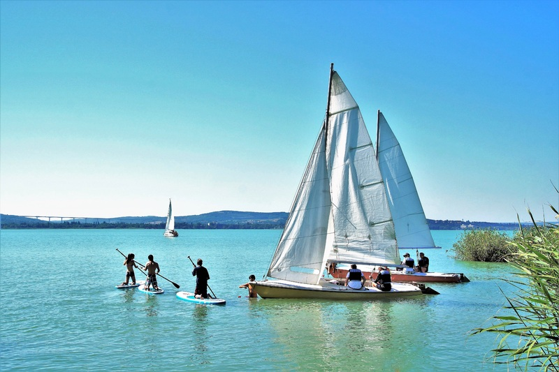
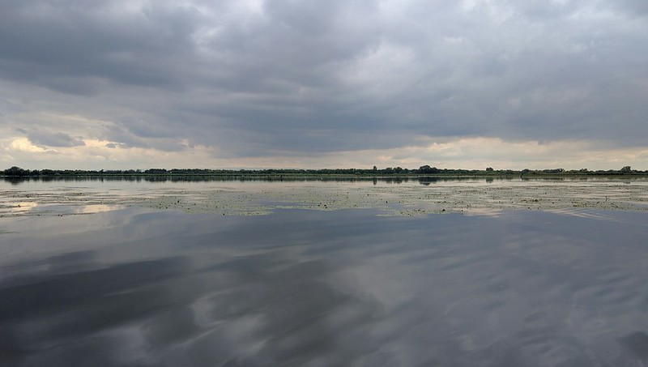
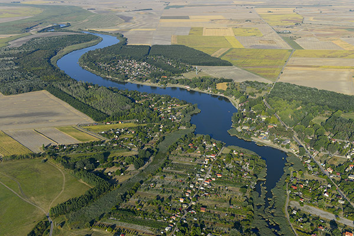

Balaton
A közel 10-12 ezer éves Balaton Magyarország és egyben Közép-Európa legnagyobb tava. A tó úgy keletkezett, hogy kb. 30-35 ezer évvel ezelőtt a Föld kőzetburkában található kisebb kőzetlemezek elmozdulásának következtében a térségben süllyedékek, medencék jöttek létre, melyeket ellepett a víz. Legnagyobb táplálója a Zala folyó. Mivel a tónak állandó, természetes kifolyója nem volt, vízszintje az idők során erősen ingadozott; felszíne az eredetihez képest a beletorkolló vízfolyások feltöltő munkája következtében jelentősen csökkent. A víz magasságát ma a Sió-zsilippel szabályozzák, mely a Sió-csatornán keresztül levezeti a vízhozam egy részét. A víz színe alkáli-sókban való bősége miatt zöldesszürke. A sekély tó hőmérséklete gyorsan követi a levegőét, nyáron általában meghaladja a 20 °C-t, sőt meleg napokon a 27 °C-ot is eléri. A déli oldal kiválóan alkalmas fürdőzésre, és bár az északi oldalon hirtelen mélyül, itt is biztonságosan kialakított strandok sora várja a nyaralókat.  A tó vizét a kis mélység miatt az északról érkező erős szelek könnyen mozgásba hozzák, melyek akár kétméteres hullámokat is kelthetnek. A Balaton már a XVIII. századtól kezdve a hazai társasági élet egyik központja. A szélesebb rétegeket érintő fürdőzés a XIX. sz. második felében indult meg, de nagy népszerűségre az első világháborút követően tett szert, amikor a trianoni békeszerződés következtében elveszített tengeri és hegyvidéki üdülőhelyek vendégkörét kárpótolta. Az 1950-1970-es évek bezártságában az egyik legkedveltebb hazai üdülőterületté vált. A tó a fürdőzésen túl halállományának köszönhetően a horgászni vágyók számára is vonzó helyszín. A balatoni régió a fürdésnél és a horgászásnál sokkal többet kínál az idelátogató vendégek számára. A vidék az ősidők óta folyamatosan lakott, s ezért szinte minden történelmi korból találhatók itt emlékek. Várak, várromok, középkori templomromok, csodálatos kastélyok őrzik múltunkat. A környék a tihanyi bencés apátságtól, a nagyvázsonyi Kinizsi váron át, a Keszthelyen található Festetics-kastélyig sok műemléket, látnivalót kínál. Emellett figyelmet érdemelnek az épségben fennmaradt balatoni tájházak is. Az oszlopokkal és íves tornácokkal díszített népi lakóházak, a füstöskonyhás parasztházak az itt élő egyszerű, vidéki emberek életébe engednek bepillantást.
Tisza-tó
A Tisza-tó (1988-ig Kiskörei víztározó) Magyarország második[* 1] legnagyobb tava és legnagyobb mesterséges tava a Tiszán, az Alföld északi részén.[1] Létrehozásának legfontosabb okai a Kiskörei Vízerőmű működéséhez szükséges egyenletes vízhozam biztosítása volt, valamint az ugyanebben az időszakban, Tiszaújvárosban telepített új Tiszai Hőerőmű működéséhez szükséges magas vízszint biztosítása duzzasztással. Az Alföld északi részén,[1] Heves vármegye délkeleti szélén, Borsod-Abaúj-Zemplén, Heves és Jász-Nagykun-Szolnok vármegye határán fekszik. Területe 127 km², melyen mozaikosan váltakoznak a nyílt vízfelületek, szigetek, holtágak, sekély csatornák.[1] Hossza (a Tisza folyása mentén mérve, vagyis nagyjából észak-déli irányban) 27 kilométer, átlagos mélysége 1,3 méter; a legmélyebb pontján azonban 17 méter mély. 43 km²-nyi sziget található benne. A Tisza-tó közúti megközelítése tulajdonképpen nem egyszerű, mert a térségében húzódó főutak jobbára messze elkerülik; ez alól az egyetlen kivétel a 33-as főút, mely nemcsak, hogy érinti, de (az északi harmadában) keresztül is szeli a tó területét, Poroszló és Tiszafüred között. A tó (folyásirány szerinti) bal partján fekvő  települések között a Tiszaroff-Tiszafüred közti 3216-os húzódik végig, a jobb part községeit a 3213-as út köti össze; a tó északi oldalán fekvő települések megközelítési és összekötő útjai a 3301-es és a 3302-es utak, a két part közti átjárást pedig a 33-as főúton felül még egy út biztosítja: ez a 3209-es, mely Kiskörénél szeli át a Tiszát. A hazai vasútvonalak között három olyan van, amelyen megközelíthető a Tisza-tó térsége. Kettő ezek közül a Tiszát is keresztezi: a Debrecen–Füzesabony-vasútvonal, mely közvetlenül a 33-as főút nyomvonala mellett húzódva szeli át a tó északi részét, valamint a Kál-Kápolna–Kisújszállás-vasútvonal amely a vízlépcsőtől délre halad át a folyó felett; előbbihez Tiszafürednél csatlakozik a Karcag–Tiszafüred-vasútvonal, amely Karcagtól húzódik a tópart legnagyobb városáig. A tó megközelítése szempontjából legfontosabb vasúti csatlakozási pontok: Poroszló vasútállomás, Tiszafüred vasútállomás, Kisköre vasútállomás és Abádszalók megállóhely, de a tó körüli községek közül saját állomása van Tiszaszőlősnek, és említést érdemel még e körben Tiszafüred-Gyártelep megállóhely is.
Szelidi-tó
Szelid neve a közeli Várdomb erõdítményével és a török idõk harcaival függhet össze, ugyanis a török csapatok a magyar túlerõt látva, megállásra és kompromisszumokra kényszerültek "megszelidültek" ezen a területen.A tavat a még a Duna vize mélyített ki évezredekkel ezelõtt. Jelenleg 4km hosszú, szélessége átlagosan 150-200m között mozog, átlagos vízmélysége 3-4 méter, vize nyáron akár 28°C-ra is felmelegedhet, így fürdõzésre kiválóan alkalmas. A talajból sok nátrium-magnézium-karbonát és nátrium-jodid oldódik ki, ezért már a középkorban sebgyógyításra használták, ma inkább idegrendszeri, hormonális és reumatikus bántalmak kezelésére ajánlják. Vize szagtalan a gyógyfürdõkkel ellentétben, jelenleg még nem minõsített gyógyvíz, ezért üdülõfalu létesült a környezetében. Egy másik legenda szerint Bence vitéz úgy meghajszolta lovait hogy azok patái elvástak. De miután a lovak hosszasan a tó vizében állva ittak sebeik gyorsan rendbe jöttek. Szeliden 2000-ben újították fel a Kastély Szállót, a jövõbeni tervek szerint gyógykezelésekre alkalmas létesítményeket is létrehoznak benne. A kastély egykoriban a kalocsai érsek pihenõ kastélya volt. A Szelidi-tavat 360 hektáros természetvédelmi terület övezi, ami növényi gazdagságával a Kiskunsági Nemzeti Park egyik gyöngyszeme. A tó környékén így kellemes sétákat vagy kerékpártúrákat tehet az idelátogató. A vendégeket egy ingyenesen látogatható szabad strand és egy nagyobb igényesen kialakított fizetõstrand várja. A parton vízibiciklik, csónakok, kenuk, és surfök bérelhetõk, így akár rövidebb vízi túrák is tehetõk. A gyerekeket kiépített játszóterek és egy óriás vízicsúzda várja. A horgászat kedvelõi sem csalódhatnak a tóban amúr, keszeg, kárász, ponty és törpeharcsa rendszeresen akad a horgokra.A további részletes kulturális-, sport és szórakozási lehetõségek leírásáért kérem tekintse meg "Program lehetõségek" menüpontunkat. A Szelidi-tóban a magyarországi vizekben élő majdnem minden halfaj megtalálható. Horogra akadt az elmúlt években több 80 kg feletti harcsa, 27 kg-os ponty, 15 kg-os csuka, 12 kg-os süllő és 25 kg-os amúr is. Az utóbbi években a telepítéseknek is köszönhetően a Szelidi-tó rablóhal állománya is jelentős mértékben erősödött. Téli időszakban termetes csukákat fognak a horgászok, tavasztól őszig számos harcsa és süllő fogásáról érkeznek hírek. Néhány éve újra megjelentek a balinok, de a tóban megtalálható a pisztrángsügér is, ami tavaszi feltöltéskor kerülhetett a tóba a csatornából, és minden jel szerint remekül érzi magát.